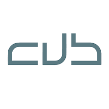

Situation1 - Cyber - CUB¶

Phase d’analyse préalable¶
Présenté par : Joris Texier
Date de rédaction : 17 septembre 2025
Version : 1
Sommaire¶
- Question
Question¶
1️⃣ Pourquoi le RSSI choisit une solution UTM plutôt qu’un pare-feu stateful traditionnel ?¶
Le RSSI choisit une solution UTM (Unified Threat Management) plutôt qu’un pare-feu stateful traditionnel pour bénéficier d’une protection plus complète et centralisée face aux menaces modernes (malwares, intrusions, phishing, etc.).
L’UTM combine plusieurs fonctionnalités de sécurité dans une seule plateforme : - Antivirus intégré - Système de prévention d’intrusion (IPS) - Filtrage web et applicatif - Contrôle des accès et des flux réseau
Cette approche offre :
- Une meilleure visibilité sur le trafic réseau
- Un contrôle plus fin des utilisateurs et des services
- Une gestion simplifiée via une interface unique
- Une réduction des coûts de maintenance et de supervision
De plus, l’UTM permet :
- Une meilleure conformité réglementaire (ex : RGPD)
- Une adaptation rapide aux nouvelles menaces
- Une centralisation des logs et alertes
Contrairement au pare-feu classique, qui se limite à un filtrage basique du trafic, l’UTM offre une sécurité proactive et évolutive.
2️⃣ Pourquoi choisir un boîtier Stormshield plutôt qu’une autre solution concurrente (Palo Alto, Checkpoint) ?¶
1. Intégration européenne et conformité RGPD¶
Stormshield, entreprise européenne, est souvent choisie pour des raisons de souveraineté numérique et de conformité réglementaire.
Ses solutions sont conçues pour répondre aux exigences du RGPD et aux politiques de cybersécurité gouvernementales européennes.
Cela garantit :
- Une protection renforcée des données sensibles
- Une absence de dépendance vis-à-vis de fournisseurs non européens
- Une meilleure intégration dans les infrastructures publiques et PME françaises
Ainsi, Stormshield est souvent préféré dans les contextes où la confidentialité et la souveraineté des données sont prioritaires.
2. Facilité de gestion et coût compétitif¶
Les boîtiers Stormshield sont reconnus pour :
- Leur interface intuitive et accessible
- Leur simplicité de déploiement et d’administration
- Des mises à jour automatisées et une supervision simplifiée
De plus : - Le rapport qualité/prix est souvent meilleur que celui de Palo Alto ou Checkpoint - Ils offrent des fonctionnalités similaires à un coût plus abordable - Adaptés aux PME ou collectivités avec un budget limité
En résumé :
Les solutions Stormshield combinent sécurité, conformité européenne et simplicité d’administration tout en restant économiques.